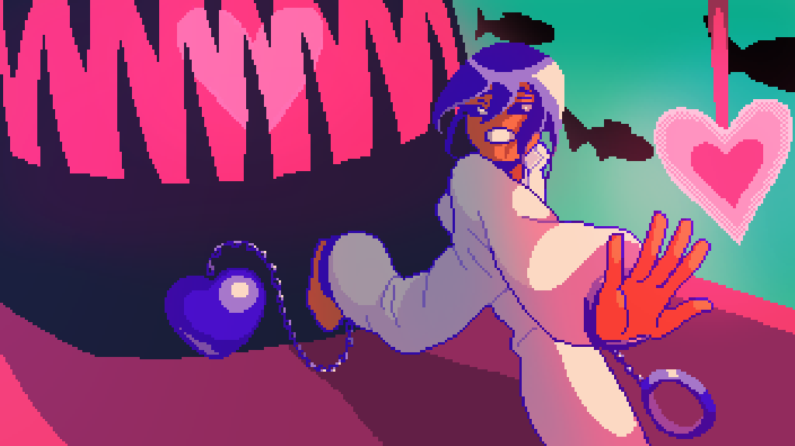

HEART ♥ BREAKOUT
Escape from your toxic lover in this surreal underworld world!
An endless runner made by Andy Eng, Ashley Lu, Siwen Tao, and Erick Tung in Phaser 3.
I worked on this browser game as lead artist, art director, and side programmer. I took inspiration from Hades' art direction with the high saturation colors and strong contrast to create a more impactful experience. Some of contributions include:
- Working with 3 other classmates to brainstorm ideas and develop the game
- Creating a moodboard for the game
- Concepting color palettes for the environment and character
- Concepting character designs
- Illustrating title artwork, environment assets, obstacles, and UI boxes
- Animating the playable character and monster enemy
- Implementing animations and adding visual tweak using Phaser 3 JavaScript framework
- Using Aseprite to animate and Clip Studio Paint to concept and illustrate
- Developing and styling a website to hold our game on
You can play the game here.